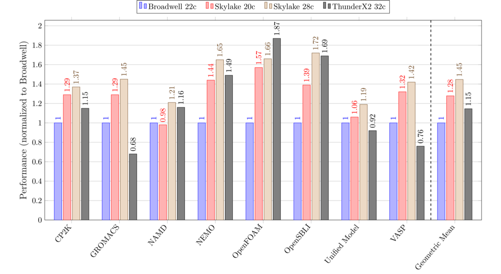

Comparitive HPC Benchmarking
Andy Turner, EPCC
5 Sep 2018
a.turner@epcc.ed.ac.uk

Slide content is available under under a Creative Commons Attribution-NonCommercial-ShareAlike 4.0 International License.
This means you are free to copy and redistribute the material and adapt
and build on the material under the following terms: You must give appropriate credit, provide
a link to the license and indicate if changes were made. If you adapt or build on the material
you must distribute your work under the same license as the original.
Note that this presentation contains images owned by others. Please seek their permission
before reusing these images.
Built using reveal.js
reveal.js is available under the MIT licence
Benchmarking
Understand the purpose
- Who will the information be used by?
- What will the information be used for?
- What are you trying to compare?
UK benchmarking efforts
- HECBioSim
- GW4 Isambard
- UK National HPC Open Source Benchmarking
HECBioSim Benchmarking
James Gebbie, SCD, STFC
Purpose/Goals
- Who? Support users with estimating resource requests for consortia HPC time applications
- What? To understand how scientific case translates into performance
- What? Understand how software choices affect scientific accuracy
- What? Enable beginner users of HPC to make the right decisions about software and compute resourcing
- Comparing full application performance of applications used by the consortia for realistic research scenarios
Full set of input files for each MD engine, details about the benchmarks and a
full set of results we have run can be found at:
https://www.hecbiosim.ac.uk/benchmarks
A calculator tool has aimed at novice users to HPC based on these benchmarks can be found at:
https://www.hecbiosim.ac.uk/archer/aucalculator
GW4, Isambard Benchmarking
James Price and Simon McIntosh-Smith, University of Bristol
Approach
- In the context of Isambard Tier-2 system, want to compare performance between various CPUs
- Initially working at the node level
- Also comparing different compilers and math libraries for each benchmark on each platform
- Have made all of our benchmarking scripts and results available on GitHub: https://github.com/UoB-HPC/benchmarks
Benchmarks and processors
- Benchmark the most heavily used applications on ARCHER
- Working: CP2K GROMACS NAMD NEMO OpenFOAM OpenSBLI Unified Model
- In the pipeline: CASTEP and HYDRA
- Target processors:
- Cavium ThunderX2, 2x32 cores @ 2.2 GHz, 256 GB DDR4-2666
- Intel Xeon E5-2699 v4, 2x22 cores @ 2.2 GHz, 128 GB DDR-2400
- Intel Xeon Gold 6148, 2x20 cores @ 2.4 GHz, 192 GB DDR4-2666
- Intel Xeon Platinum 8176, 2x28 cores @ 2.1 GHz, 192 GB DDR4-2666
Current results

Open Source Benchmarking
Wait, what?
Benchmarking is about quantitative comparison
Most benchmarking studies do not lend themselves to quantitative comparison
- Do not publish raw results, only processed data
- Do not publish details of how data was processed in suffcient detail
- Do not provide input datasets and job submission scripts
- Do not provide details of the how software was compiled
Our purpose
- Who? Users and RSEs
- What? Choosing the architecture to use, understanding differences between performance on different architectures
- Compare full application performance for HPC appications on representative cases for researchers
Live demo!!
Summary
- Most benchmarking studies do not provide the required information for qualitative comparison
- We can do better than this!
- Also allows for easy contributions from many different people/groups
Never plot speedup!